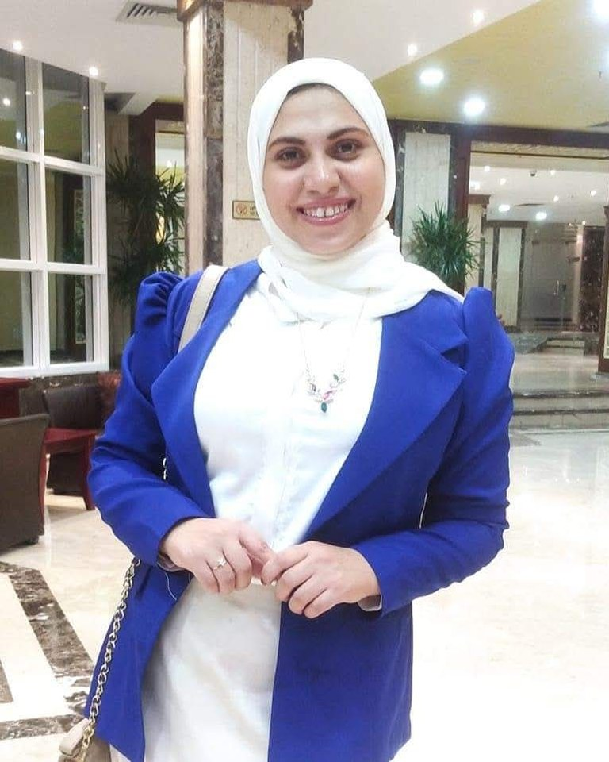

شخصية تنمو، وعلاقة تقوى.
فاطمة مجدي بناء الشخصية، إرشاد الوالدين، ودعم السلوك
معلمة ومرشدة تعمل مع الأطفال وأهاليهم. مساحة للسؤال والفهم: عن شخصية الطفل واحتياجاته، والسلوكيات اليومية التي تحتاج إلى دعم.

عن فاطمة
معلمة ومرشدة، قريبة من الطفل وأهله
أنا فاطمة مجدي، معلمة ومرشدة. أعمل مع الأطفال وأهاليهم، وأهتم بنمو الطفل وبالعلاقة بينه وبين أهله في الوقت نفسه.
أؤمن بأن الطفل يفهم ويتذكّر أكثر عندما يجرّب بنفسه، وأشارك على صفحتي أفكارًا عن التعلّم بالتجربة والذكاء العاطفي ومعسكرات الأطفال.
اسأل فاطمة عن:
مجالات الدعم
كيف يمكن أن تساعدك فاطمة؟
اختر المجال الأقرب لما تحتاجه، وابدأ الحديث مع فاطمة على واتساب.
-
اسأل عن بناء الشخصية
بناء الشخصية
دعم نمو شخصية الطفل، وتعزيز ثقته بنفسه وقدرته على التواصل مع الآخرين.
-
اسأل عن إرشاد الوالدين
إرشاد الوالدين
مساحة للأهل للحديث عن تحديات التربية اليومية، وفهم احتياجات الطفل، والوصول إلى تواصل أهدأ وأوضح معه.
-
اسأل عن دعم السلوك
دعم السلوك
للحديث عن السلوكيات التي تتكرر أو تقلقك مع طفلك، ومعرفة خيارات الدعم المناسبة.
من أفكار فاطمة
التعلّم بالتجربة
مش كل معلومة الطفل بيسمعها، يقدر يفهمها أو يفتكرها. لما الطفل يشوف، ويلمس، ويجرب، ويلاحظ، ويسأل… هو مش بيستقبل معلومة وخلاص، هو بيكوّن خبرة حقيقية مرتبطة بحواسه.
- 1يشوف
- 2يلمس
- 3يجرب
- 4يلاحظ
- 5يسأل
تواصل مع فاطمة
اسأل عن مجالات الدعم والمواعيد المتاحة والتفاصيل في رسالة على واتساب.
ابدأ محادثة على واتساب- الهاتف وواتساب
- +20 11 24489149
- البريد الإلكتروني
- fatmamagdi123edu@gmail.com
- فيسبوك
- @fatma.magdi123